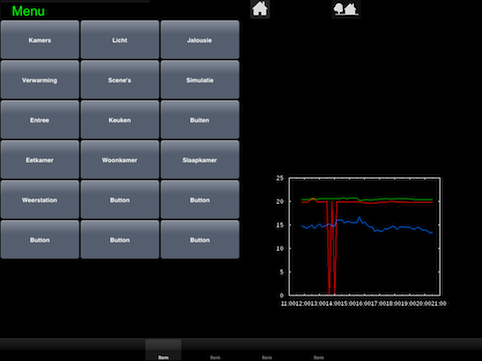

Hi all,
I have ported my iPhone app now to the iPad with some nice results. As I have space left I would like to add the temperature graph which I gathered over the day to the screen.
Of source it is easy to add an image and have a static .png file loaded to the screen. HOwever, when the graph is updated 10 minutes later, I would like to screen also to be updated similar to the temperature data which are updated whenever a new KNX value is measured by the sensor.
So I started thinking, is there a way that the Sensor sees a file is updated, and then displays the new image instead of the old image? But how? I tried to use the customer sensor, but failed as the values are numerical values and not images.... I must be missing a trick here.
Did anyone solve this already?
Smply put: i want to display an image which gets refreshed whenever there is a new image (graph) available. The image is stored on the OpenRemote server.
Kind regards,
Rick
PS: see below what I try to achieve, roughly I part of the screen is navigation, the other displays parameters etc:

{kind=link}
|
Guys, Can anyone point me to where I could find information about making images (PNG, JPG) being updated automatically when they are changed? Does the ORB server take care of that? Or does one have to set parameters for this to happen. Grateful for any advise. Rick |
|
You could use a web element for this, it will not rendered an image but a web container but this should work (and has been used for this before). The web element is already supported by the consoles and controller, see this thread : http://www.openremote.org/pages/viewpage.action?pageId=15532976&focusedCommentId=16482448#comment-16482448 |
|
Eric, WOW. You guys are great. So in order to use this I should download a modeler and run it standalone on my machine i guess? Let's see whether I have the ability do do that. Otherwise will have to wait for the next online Modeler release (or is there a binary for Mac available somewhere?). However, I read in the thread I would have to build a new iOS console as well, which I do not have the tools for. Or is the latest released console 2.0.1 for iPad already supporting this? Thanks for your comments and help, |
|
No, I'm afraid no public release of the iOS console does support this web element at this stage. |